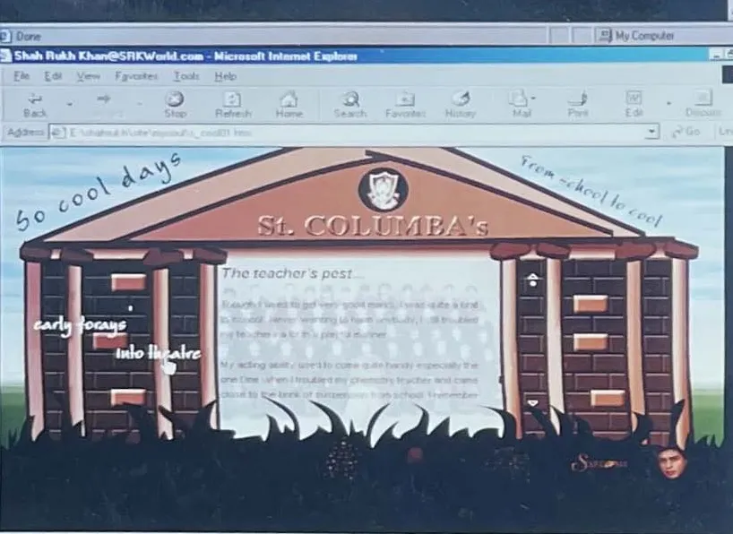

Part I · The Origin of the King, 1965 to 1999 · 4 of 57
Chapter 2 · From School To Cool, 1970 to 1985
[image: SRKWorld.com, 2000: From School To Cool]

SRKWorld.com, 2000: “From School To Cool”, set at St. Columba’s. (Archive: the author’s collection)
At St. Columba’s, a Christian Brothers’ school in central Delhi, he was good at almost everything: studies, hockey, football, the school play. He won the Sword of Honour, the school’s highest award for an all-rounder. (Fact) [Unverified] the year of the award, from the school’s records.
One teacher, Brother Eric D’Souza, kept his boys out of trouble by pouring their energy into football, hockey, the guitar and music. On the television show Jeena Isi Ka Naam Hai Khan called him the one person he looked up to after his parents, the guiding light of his life. Brother Eric died in Goa on 13 October 2024, aged 74. (Fact. The Week, 14 Oct 2024)
On the school stage he was praised for his impressions of Dilip Kumar, Amitabh Bachchan and the actress Mumtaz, and his acting partner was a childhood friend, Amrita Singh, who would become a film star before him. (Fact) An impressionist learns stars from the outside before he becomes one. He studies the walk, the voice and the pause. (Analysis)
Then two things closed. A shoulder injury ended any hope of a career in sport. And in 1981 his father died of cancer. The son was fifteen. His mother kept the family going. (Fact)
In 1984, in Delhi, he met Gauri Chhibber, a Punjabi Hindu. He was a Muslim boy with no father and no career. They would marry seven years later. (Fact. Wikipedia: Gauri Khan)
A form that appears to be his admission to Hansraj College, which went viral in December 2025, lists his Class XII marks: 92 in his elective, 78 in mathematics, 78 in physics, 51 in English. (Fact. WION, 2 Dec 2025) [Unverified] WION could not authenticate the form. If it is genuine, the man who would win a country with words scored his lowest mark in English and two of his highest in mathematics and physics. The numbers came before the actor. (Analysis)
The same television show kept a second memory. On Jeena Isi Ka Naam Hai in 2002, hosted by Farooq Shaikh, his school friends recalled that in Class 11 he had faked an epileptic fit to get a group of them out of a new teacher’s class. (Fact. IANS, 24 Sept 2025) The boy who did Dilip Kumar for applause also did a seizure for an audience of one teacher. One of the first roles anyone believed was played in a classroom. (Analysis)
The school. St. Columba’s was founded in 1941 by the Indian Province of the Congregation of Christian Brothers and stands at 1 Ashok Place, in the middle of Lutyens’ Delhi. Its motto is Sapere aude sincere et constanter: dare to be wise, sincere and constant. Its list of alumni places him in the class of 1985, alongside Deepak Chopra (1963), the Harvard Business School dean Nitin Nohria (1980), Naukri.com’s founder Sanjeev Bikhchandani (1981) and MakeMyTrip’s founder Deep Kalra (1987). (Fact. Wikipedia: St. Columba’s School, Delhi, October 2026) Within six school years of each other, one corridor in central Delhi turned out the founders of two of India’s first large internet businesses and the actor who would put his own life online in 2000. (Analysis)
The voice backstage. Palash Sen, a year ahead of him at St. Columba’s, told the YouTube channel Kadak in 2026 that the two did sports, debating and quizzes together, and that teachers seemed especially fond of the younger boy. Khan had a role in a school musical but could not sing it, so Sen sang his part from behind the stage. (Fact. Gulf News, 10 Sept 2026) Years before any film, he was already performing to another man’s voice. (Analysis)
The friend from the colony. Sunil Kukreja, a Rajinder Nagar businessman a few months older than him, told Outlook that they played cricket together, ate at each other’s homes after school and called each other by nicknames; his was “Mela”. Kukreja remembers Khan’s mother treating the neighbourhood boys as her own, and a boy with no interest yet in acting who was hardworking, stubborn and never forgot what was said to him. (Fact. Kukreja’s account, Outlook, 2 Nov 2021) Kukreja also says the family lived first in Gautam Nagar and moved to Rajinder Nagar when Khan was 15, about 1980; Chapter 1 places the family’s rented flats in Rajendra Nagar without a date. (Fact, same source; Method note) [Unverified] the Gautam Nagar years and the year of the move, which rest on one friend’s memory; a family statement or a dated address record would settle them.
The return. On Sunday 20 October 2019 he went back to St. Columba’s, quietly, with only a few of the school’s staff told. He met about 18 students from the music and theatre society, signed their shirts and talked about bunking classes and disliking chemistry, while a crew filmed the meeting for a CNBC International interview. (Fact. ScoopWhoop, 24 Oct 2019) He chose the music and theatre boys, not the sportsmen he had once been: the school stage, not the playing field, was the part of St. Columba’s that made him. (Analysis)
The first role. A handwritten letter of more than six pages, attributed to him, undated and believed to come from his last year at Hansraj College, circulated on Reddit in August 2023. In it he says he was “always very good at copying people and mimicking”, beginning with Hema Malini and moving on to Dev Anand, Prithviraj Kapoor and Raj Babbar. He writes that at his father’s restaurants he met actors including Raj Babbar, Rohini Hattangadi, Ajit Vachani and Surekha Sikri, that he wrote Urdu couplets at about nine or ten, and that his first role was Kallu Bania in the school’s production of Andher Nagari Chaupat Raja. (Fact. Free Press Journal, 12 Aug 2023) [Unverified] the letter’s authorship and date, and the year of the play; the original letter or a school programme would settle them. The letter’s list of imitations differs from the school-stage memory earlier in this chapter (Dilip Kumar, Amitabh Bachchan, Mumtaz); both lists are printed. (Method note) The play’s title speaks of a city of darkness and a foolish king. The boy later called King made his first entrance as a shopkeeper in a misruled kingdom. (Analysis)
The wicketkeeper. The actor Rahul Dev, born in New Delhi on 27 September 1968 and a St. Columba’s boy, later played Bheema opposite him in Asoka (2001). (Fact. Wikipedia: Rahul Dev, November 2026) Dev has said that at school Khan kept wicket while Dev bowled fast, that Khan came first in football, hockey, cricket and every game, and that he won the school’s Sword award that year. (Fact. Rahul Dev’s account, DESIblitz, 25 Oct 2023) In a 2025 interview with SCREEN, as reported by Pinkvilla, he added gymnastics and sprinting, said Khan often had the lead in school dramatics, and said he could have made a career in science or sport. (Fact. Rahul Dev’s account, Pinkvilla, 16 May 2025) DESIblitz makes Khan the senior of the two; the Pinkvilla report reads the other way. Their dates of birth, November 1965 and September 1968, support DESIblitz. (Method note) Dev’s account confirms the Sword of Honour but not its year, so that item stays open. (Method note)
Two boys from one school field later met on one film set as Asoka and Bheema. The senior who kept wicket would make the film; the fast bowler three years behind him would play in it. (Analysis)
The award, and the batch. St. Columba’s own list of scholarships and awards names the Sword of Honour, given with the Br Foley Award, as a Class XII prize “for excellence in academics, co-curricular and extra-curricular activities and exemplary conduct”; a separate prize, the Br Oman Award, goes to the first runner-up. (Fact. St. Columba’s School, Scholarships and Awards, read November 2026) The list names no past winners and gives no start year, so the year of his Sword stays open (Addendum G). (Method note) The Asian Age’s 2018 report on the school’s 75th year lists him among its alumni as a 1984 batch actor; the Wikipedia alumni list cited earlier in this chapter gives the class of 1985. Both are printed. (Fact. The Asian Age, 16 Feb 2018) [Unverified] the year he left St. Columba’s; the school’s leaving register would settle it. The same report dates the Columban Open, which it calls North India’s premier school quiz, to 1984. (Fact, same source)
The computer room. Rahul Dev, in an interview with Mamaraazi as reported by Pinkvilla, said the school was among the first in India to bring in computers, that only 20 students were chosen for them by an aptitude test, and that Khan was one of the 20. (Fact. Rahul Dev’s account, Pinkvilla, undated online report, read November 2026) [Unverified] whether St. Columba’s was among India’s first schools with computers, the year, and the size of that first class; the school’s records would settle them. If Dev remembers right, the boy picked for the first computer class is the man who put his own life online in 2000 (Chapter 6). (Analysis)
The first return, on camera. Long before the quiet visit of 2019, a documentary crew followed him back. In The Inner World of Shahrukh Khan, Nasreen Munni Kabir’s film made for Channel 4, he walks through the school, calls it a little strict and very disciplined, and recalls that boys had to keep their hair short. An old acquaintance reminds him of a fight in which boys from Modern School lost teeth; he only laughs. He asks a member of the school staff whether they will still be there when he brings his son Aryan. (Fact. DNA, 28 May 2021; Koimoi, 19 Dec 2021; Wikipedia: The Inner and Outer World of Shah Rukh Khan) [Unverified] the year the school scenes were filmed; Wikipedia cites Rediff reports of October 2005 but gives no date, and Channel 4’s broadcast record would settle it. In a 2018 Filmfare interview, as reported by DNA, he gave his school nickname as “Mail Gadda”: he ran as fast as a mail train, and his hair stood out in front. In the same interview he told the fainting story himself and said he talked a chemistry teacher into better marks. (Fact. DNA, 28 May 2021) The story his school friends told on television in 2002 is the one he chose to tell about himself sixteen years later. (Analysis)
The neighbourhood stage. Outside school there was a second stage. Writing in The Patriot, Vivek Shukla says that in the 1970s he acted in the New Rajinder Nagar Ramlila, one of the Ramlilas that Punjabi refugees from West Pakistan set up in Rajinder Nagar, Karol Bagh and Punjabi Bagh. (Fact. The Patriot, 21 Sept 2025) The headline says he played Ram; the text says only that he played a role. [Unverified] the role and the year; the Ramlila committee’s records or a dated photograph would settle them. (Method note) The boy whose father came from Peshawar first faced a crowd in a festival built by families who, like his father, had crossed from the west. (Analysis)